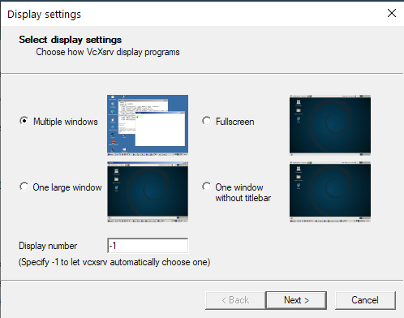
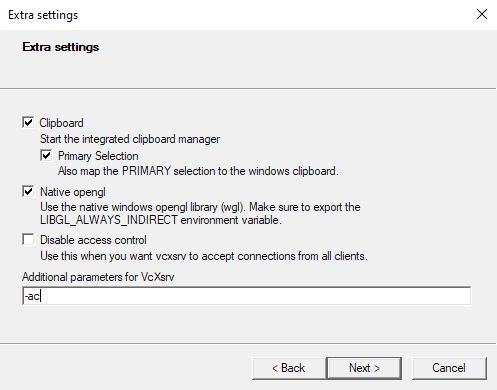
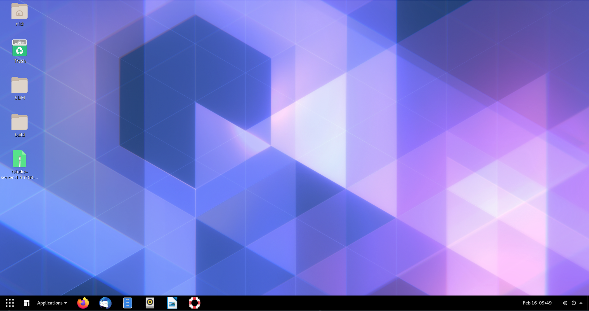
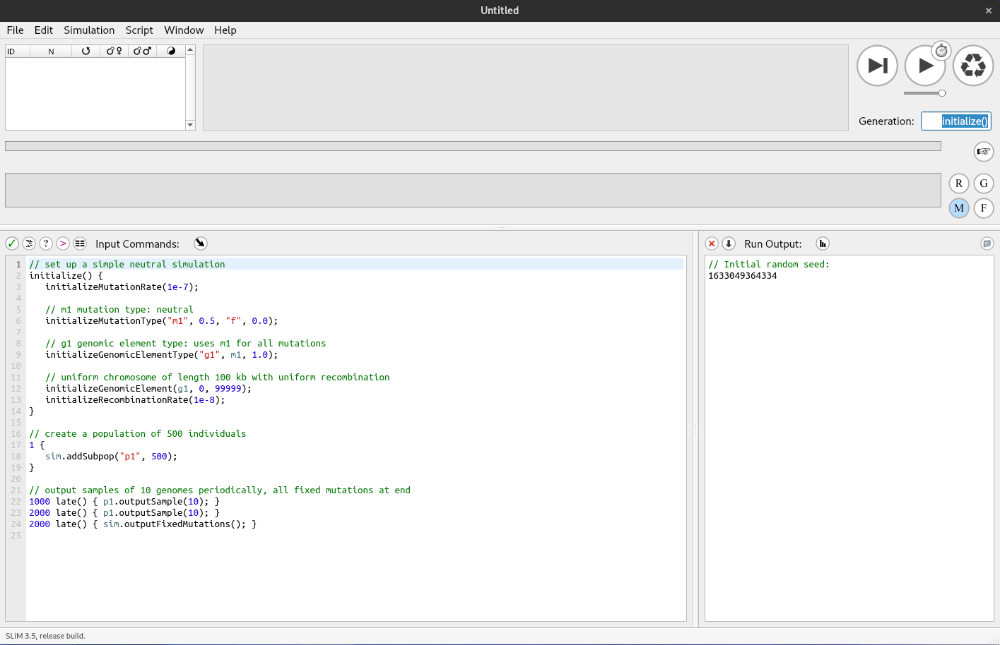
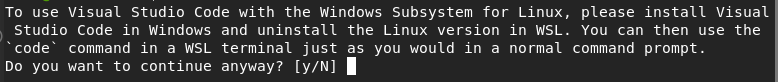
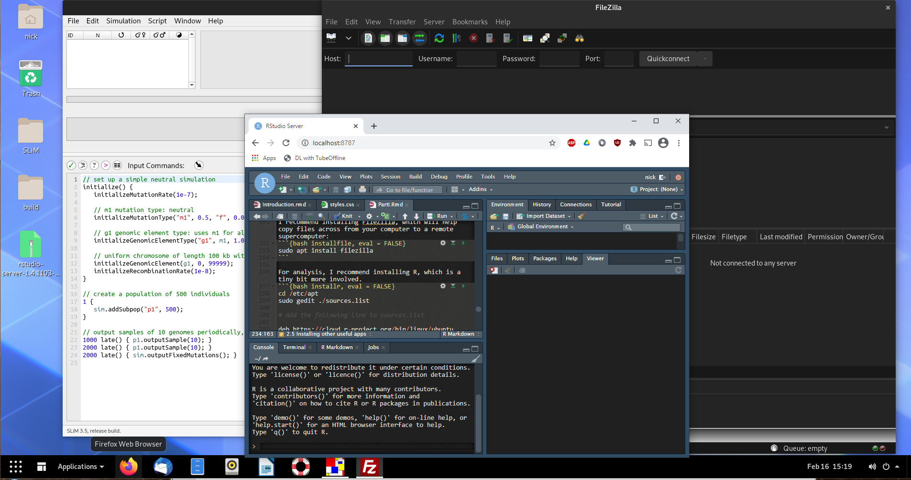

2 Installing a Linux environment & SLiM on the WSL
2.1 Overview
SLiM was built primarily with MacOS in mind, so no native Windows version exists. However, a Linux version is around. We can use Windows 10’s new Windows subsystem for Linux (WSL) to run SLiM on Windows (or if we want to be pedantic, we’re running SLiM on a Linux kernel running off Windows). The SLiM manual has a pretty good step-by-step instruction for this if you want to run SLiM by itself, and not worry about using WSL for anything else. However, Linux is a fantastic base for many scientific applications, such as connecting to supercomputers, which are more often than not Linux-based. As such, I’ll be guiding you through installing a desktop environment for WSL, installing R, RStudio, and SLiM, and getting you up to speed with some basics of using Linux. For MacOS users, you can simply install SLiM using the installer package available here. There are also instructions in the SLiM manual for building SLiM from source for MacOS if you would prefer to do that. For Windows users not on Windows 10, I’m afraid there is no way at the moment to run SLiM “natively” on Windows - your best bet would be to dual boot a Linux distribution, or run a virtual machine with VirtualBox or VMware.
Box 2.1.1
Linux (or any Unix based operating system, such as MacOS) differs from Windows in the sense that absolutely everything is treated as a file - including devices like printers or monitors. These devices have specialised files that store information about that device. Programs can read those files (or write to them) to communicate with the device itself. Note that these aren’t files in the sense that they are a .txt or something, but they are exposed to the filesystem in the same way and can be treated differently depending on what commands you give it.
For example, you could enter
cat /proc/cpuinfoor
gedit /proc/cpuinfoto print your CPU information to the terminal, or open the file with a text editor so it is readable.
You can also use various ‘files’ such as /dev/null or /dev/urandom to instruct other commands. Redirecting output from a command to /dev/null will silence the output so it isn’t displayed in the terminal:
slim ~/PolygenicSLiM/box2.1.slim # With output## // Initial random seed:
## 1682804588459
##
## // RunInitializeCallbacks():
## initializeMutationRate(1e-07);
## initializeMutationType(1, 0.5, "f", 0);
## initializeGenomicElementType(1, m1, 1);
## initializeGenomicElement(g1, 0, 999);
## initializeRecombinationRate(1e-08);
##
## // Starting run at generation <start>:
## 1
##
## Look at this messy output!slim ~/PolygenicSLiM/box2.1.slim > /dev/null # Output nullified/dev/urandom will generate pseudorandom numbers:
od -d /dev/urandom | head # Generate random decimal integers## 0000000 65311 20395 50337 21963 58148 18617 14317 39458
## 0000020 41734 4612 22858 27412 11612 6649 20266 49042
## 0000040 22352 21360 48068 60646 18598 42026 24459 19658
## 0000060 64521 25040 34672 2046 41096 45365 57587 44056
## 0000100 50737 1677 42788 57606 8090 24336 16186 61889
## 0000120 48069 1227 2372 25529 33046 39162 7025 57900
## 0000140 6067 20798 11600 42378 32419 22044 27727 25261
## 0000160 29726 33943 62183 37708 55454 21767 41968 9894
## 0000200 15215 41132 25540 4962 56964 18241 59300 36139
## 0000220 24741 1935 29712 35194 27749 986 16194 39531The power of having these very specific commands which can act on a lot of different types of files is that Linux users can chain together these commands to efficiently solve a larger problem.
2.2 Why Linux?
To many people, the term ‘Linux user’ is analogous to ‘computer wizard’ or ‘weirdo’. Unfortunately for you, future weirdo, Linux is an incredibly helpful tool for scientific applications. I’ve already mentioned that SLiM doesn’t run on Windows natively, but that is far from the only scientific program that requires (or runs better on) a Linux operating system. Although user-friendly, both Windows and MacOS are extremely bloated, meaning that just running the operating system requires a massive amount of memory and CPU resources that your other applications cannot use. Linux is a barebones system, with the idea being that the user can build the operating system how they want by installing only the features that they will use, saving memory and processor power for the tasks at hand. Another reason for Linux’s speed and low memory footprint is its way of storing files (as mentioned in Box 2.1.1), which is very different to Windows. It takes a bit of getting used to, but in the end you will save massive amounts of time using Linux versus Windows or MacOS. However, there are still programs that you might need to run in Windows because there is no Linux or Mac version. There are three options in this case:
- Dual-boot by installing a Windows and Linux operating system on separate hard drives (or partitions on one hard drive),
- Use a traditional virtual machine such as VMware or VirtualBox,
- Use the Windows 10 Subsystem for Linux (WSL).
Dual-booting is great if you rarely use one of your installed operating systems, but generally a bit of a pain if you’re constantly wanting to switch between using Windows and Linux software (you can only run one OS at a time, so you need to reboot if you want to use software in the other OS). VMware and VirtualBox tend to be very resource-intensive, which negates the speed advantage you get from running Linux over Windows. WSL, however, is much faster, and simple to set up.
2.3 The Windows Subsystem for Linux
Windows 10 introduced a new way to emulate a Linux machine via a Windows operating system, WSL. The advantage of this approach is accessing your data between operating systems is very easy: your Windows files are visible in Linux, and you can save files to your Windows machine directly using Linux programs. This way, you can use Linux commands such as sed and grep to filter output (extremely quickly) and directly save the output to files that Windows programs can read! Hence, we can run SLiM simulations, storing the output wherever you want, and then use Windows to do data analysis (although you could do that analysis in Linux also). Below, I’ll provide some instructions for installing WSL 2, a Linux distribution (Ubuntu 20.04), and some basics for getting started with Ubuntu.
2.4 Installing WSL
There are two choices for running WSL: WSL 1 or WSL 2. Both are fairly similar in speed, however WSL 2 uses a real Linux kernel and an extremely fast virtual machine (along with a virtual hard drive), whereas WSL 1 used a translation layer (instead of a native kernel) to translate between windows and a linux distribution. Ultimately , the main difference is WSL 2 is slightly slower when it comes to copying files between Windows and Linux, but faster nearly everywhere else. Although both versions run SLiM fine[^fn2], I’ll be opting for WSL 2.
To install WSL, you’ll need to be on Windows 10 version 1903 (build 18362) or newer. To check your version number, run winver.exe. This will tell you the version and build number (build number being in brackets).
Instructions for installing WSL 2 can be found on the Microsoft website here. You’ll want to install Ubuntu 20.04 LTS, which can be found on the Microsoft Store (for free).
This will install your Linux distribution to the C:/ drive by defualt. If you have limited space on C:/ you can move it to an alternative drive, using this tool. I recommend installing git bash on Windows and running it that way. A side effect of moving your Linux installation is the default user is replaced by root (basically admin for Linux) for some reason, but this is easy enough to fix. In your Ubuntu terminal, open up /etc/wsl.conf with nano and add the following to the end of the file:
# Open wsl.conf with the nano text editor, using administrator permissions
sudo nano /etc/wsl.conf
# Add the following lines to the bottom of wsl.conf
[user]
default=YOUR_USERNAMEIf wsl.conf doesn’t exist, create the file manually with sudo touch /etc/wsl.conf. After you’ve added that line, close Ubuntu, then in PowerShell run:
wsl -terminate UbuntuWhen you next open Ubuntu, you should login as your user again. If that doesn’t work, open up PowerShell and enter:
ubuntu config --default-user YOUR_USERNAMECongratulations! You now have a working version of Ubuntu 20.04 LTS running via Windows 10.
2.5 Installing a desktop and setting up X11
At this point you have a Ubuntu terminal which you can use to input commands. This is perfectly usable (even with a desktop you’ll be using the terminal quite a bit), but you’ll probably want a desktop environment to be more comfortable. To do this, enter the following:
sudo apt-get update # Refresh Ubuntu's list of software updates
sudo apt-get upgrade # Download and install package updates
sudo apt install ubuntu-desktop gnomeBox 2.3.1
While we’ll be installing GNOME for this installation, there are a number of other desktop environments you may want to have a look at if you aren’t happy with how GNOME looks or performs on your system. Some others to have a look at are xfce4, Plasma, Unity, MATE, and Budgie. Window managers like dwm or i3 are also good for advanced users, however they are barebones and will likely require more tinkering to get to a form you like.
The first two commands will update your base installation and packages; the third will install GNOME (a Linux desktop environment) and relevant dependencies.
While those files are downloading, you’ll need to grab a X11 program for Windows. X11 is how Linux draws graphics, so we need that so that when you run GNOME, Linux has a window to draw your desktop. I recommend VcXsrv, which is easily configurable.
After downloading and installing VcXsrv and GNOME, there’s a little workaround to get it working on WSL. In the Ubuntu terminal enter the following:
sudo nano ~/.bashrc # Open up .bashrc in the nano text editor
# .bashrc contains commands that run on startup
# Add this one to the bottom of the file in nano and press ctrl+o to save and ctrl+x to exit
export LIBGL_ALWAYS_INDIRECT=0This has something to do with how Linux handles OpenGL graphics drivers, but that’s about as much depth into it as I can go. Without doing this, SLiMgui doesn’t render properly. Next, there’s a setting that needs to be enabled which defaults to disabled in WSL. In WSL 1, this broke a lot of programs (particularly compilers), but it seems to work fine in WSL 2. In Terminal, enter:
git clone https://github.com/DamionGans/ubuntu-wsl2-systemd-script.git
cd ubuntu-wsl2-systemd-script/
bash ubuntu-wsl2-systemd-script.sh
logoutNow your Ubuntu window should close. Again, go to PowerShell and terminate Ubuntu:
wsl -terminate UbuntuNext, open up VcXsrv. You should be greeted with a panel that looks something like this:

Choose “One large window” and click next, and then next again. At this dialogue, in additional parameters type -ac

After pressing next, you should be done! You can save your configuration to create a shortcut that will open VcXsrv with your settings.

Click Finish and VcXsrv will open a blank window. Open ubuntu and enter:
gnome-sessionIn a few seconds your VcXsrv window should be populated! 
Each time you start Ubuntu and your X11 server, remember to run gnome-session to enable your desktop.
An alternative to this is to create a startup script that automatically runs gnome-session whenever you start Ubuntu.
Now you might notice that your desktop doesn’t look exactly like my example above. GNOME is quite customisable, and a plethora of user extensions to personalise your desktop. I won’t cover that here, but I would recommend checking out the GNOME extensions website, and searching around for some GNOME themes. One extension I do recommend installing is nautilus admin, which will allow you to right click in any folder to open a terminal there - a great convenience!
sudo apt install nautilus-admin
# An alternative if that doesn't work is
sudo apt install nautilus-extension-gnome-terminal2.6 Building SLiM
There’s a few ways of going about building SLiM. We’ll be following the Linux/Unix installation instructions (Chapter 2.2.1) in the SLiM manual. First, install the following packages:
sudo apt-get update
sudo apt install -y build-essential cmake qt5-default qt5-qmake mesa-utils
sudo apt install -y libgl1-mesa-glx x11-appsAfter this, you should have all the dependencies you need to run the installation script mentioned in the manual:
wget -o - --quiet https://raw.githubusercontent.com/MesserLab/SLiM-Extras/master/installation/DebianUbuntuInstall.sh | sudo bash -sThis will download and install SLiM, Eidos, and SLiMgui on your system. You should be able to find SLiMgui in your applications now, and you’ll have something looking like this: 
Box 2.4.1
What are all these dependencies that you’ve installed to install SLiM? Why do I need all that when on Windows you just open an installer? On Linux, a fair few packages are ‘built from source’. This means that the program’s source code is available for download, which means that the user can download that and compile it into an application, while being able to poke around and make adjustments to the software if they want. What the SLiM installer script does is run a series of commands to compile SLiM’s source code into machine code (1s and 0s), which are treated as an application. The applications you installed are the commands which are used to install SLiM: build-essential includes a bunch of compilers to translate human-written code to binary, cmake is a tool to generate makefiles (which are used to tell the compiler how to link certain parts of the code with others, and generally make compiling possible on large projects), qt5 is a graphics framework for drawing windows (such as the SLiMgui window), qmake is a makefile generator specifically for qt projects, and mesa-utils, libgl1-mesa-glx, and x11-apps provide tools to test that X11 and video drivers are working properly.
The concept of software compilation is fascinating, so I will leave a link here for anyone interested in learning more.
2.7 Installing other useful apps
When using SLiM, you’ll need some more apps to run SLiM on remote computers and to analyse data. I recommend installing FileZilla, which will help copy files across from your computer to a remote supercomputer:
sudo apt install filezillaFor analysis, I recommend installing R, which is a tiny bit more involved.
cd /etc/apt
sudo gedit ./sources.list
# Add the following line to sources.list
deb https://cloud.r-project.org/bin/linux/ubuntu focal-cran40/Then, in terminal enter the following:
sudo apt-get update
sudo add-apt-repository 'deb https://cloud.r-project.org/bin/linux/ubuntu focal-cran40/'
sudo apt-key adv --keyserver keyserver.ubuntu.com --recv-keys E298A3A825C0D65DFD57CBB651716619E084DAB9
sudo apt install r-base r-base-core r-recommended r-base-devThis will install the latest release of R 4.0, along with some packages. Next, we can install RStudio: you can choose to install it as an app or as a server, which you can connect to via your internet browser in both Windows and Linux. With some more set up, you could also remotely connect to it via the internet, but I’ll leave that for later.
To install RStudio as an app:
sudo apt install gdebi-core
wget https://download1.rstudio.org/desktop/bionic/amd64/rstudio-1.4.1103-amd64.deb && sudo gdebi rstudio-1.4.1103-amd64.debThen you can run rstudio to open the app.
To install RStudio as a server app:
wget https://download2.rstudio.org/server/bionic/amd64/rstudio-server-1.4.1103-amd64.deb
sudo gdebi rstudio-server-1.4.1103-amd64.debLaunch RStudio by running rstudio-server start, and stop the the service with rstudio-server stop.
The default settings allow you to connect to the server using whichever browser you’d like with the url
localhost:8787. You’ll have to login using your Linux username and password. Note that this server is running on your local machine,
so to connect to your server on a different network, you’ll have to do some network configuration (namely port forwarding and setting a static IP).
When you have RStudio running (or R if you are just running from the Terminal using R like a madman),
you can use install.packages("PACKAGE_NAME") to install packages. Necessary packages will be detailed in later
chapters when we get to needing them. To start, try install.packages("tidyverse").
Another nice piece of software is Visual Studio Code. This is a lightweight version of Microsoft’s Visual Studio IDE containing just the text editor. It has really good language tools for a variety of popular languages including Python, R, and C-based languages. For non-SLiM code, this is what I prefer to write in. Another bonus is you can install VS Code for Windows and have it communicate with your WSL installation using the Remote-WSL extension, or you can install it for Linux and run it from in there. Either way, you can download it from the Visual Studio website. If you want to install it on Ubuntu, make sure you download the .deb; you can use:
# Make a Installers directory in your /home/ if you don't have one
mkdir ~/Installers
cd ~/Installers
sudo wget https://code.visualstudio.com/sha/download?build=stable&os=linux-deb-x64
sudo dpkg -i code_*The * is a wildcard that means ‘anything’: so any file that starts with code_ will be selected
(which there should only be one of, the installer you just downloaded with wget). dpkg -i is a command
to extract and process a debian package, with -i meaning to install it to root (rather than just to the current folder).
You can open VS Code without opening a file, using code .
When you load VS Code from your WSL Ubuntu installation, you’ll get a message warning you that you should
install it on Windows instead. It stills works perfectly fine on Linux, you just have to press Y to accept
the message that appears:

If you want to install VS Code on Windows and connect remotely to your Ubuntu distribution (you’ll still have access to the Terminal etc.), you can download the installer for Windows from the Visual Studio website and install as usual. From there, you can install the Remote-WSL extension, which will run the VS Code UI on Windows, but all the inner workings on Linux, giving you access to all of the useful tools Linux provides (such as Clang and gcc if you are working with a compiled language).
When you work with VS Code, it will automatically detect what language your code is based on the filename. For example, if you save a file as .py, VS Code will ask if you want to install a language extension for Python, which will give you access to autocomplete and error checking a la a full-fat IDE. There is no SLiM/Eidos extension, but it is possible to make custom language extensions. Regardless, this might not be the best way to program for SLiM considering SLiMgui gives immediate, visual feedback on the behaviour of the model by running it in real time and showing mutation frequency dynamics, which VS Code would lack.
Congratulations! You now have a Linux desktop, SLiM, RStudio, VSCode and FileZilla installed and ready to go for exploring polygenic adaptation using computer simulations! 
2.8 Footnotes
[^fn2] One bug I did find with WSL 1 was that Windows Security seems to treat a few programs running on Linux as something suspicious. The result is that Windows Security uses 50% or more CPU while those programs are running. SLiM is included in this, so if for whatever reason you use WSL 1, remember to turn off real-time protection during your SLiM runs and then remember to turn it back on when the run is finished.